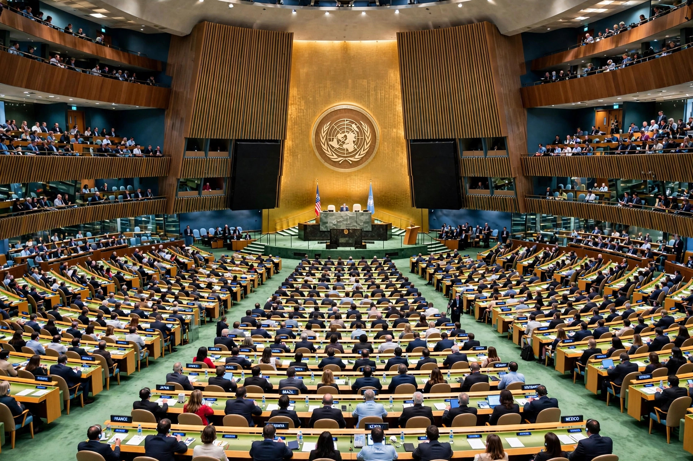

World government is the notion of a single common political authority for all of humanity. It typically takes the form of a proposed federal world state standing above nation-states, analogous to the way national governments stand above provinces — with powers limited to genuinely global matters such as war and peace. No such government exists; the United Nations is an intergovernmental organisation of sovereign states, not a government, though it is sometimes seen as a step toward one.
The ambition is ancient. Dante argued for a universal monarchy in De Monarchia; Immanuel Kant, in Perpetual Peace (1795), proposed a federation of free states as the road to ending war. The Hague Peace Conferences, the League of Nations (1920) and the United Nations (1945) progressively institutionalised cooperation without creating a sovereign above states. The catastrophe of the Second World War and the advent of nuclear weapons inspired a serious world federalist movement: figures such as Albert Einstein argued that only a world authority could control atomic weapons, the activist Garry Davis renounced his American citizenship in 1948 to declare himself a "world citizen", and world federalist organisations campaigned for a democratic federal constitution for the Earth.
For: war between states could be abolished as it has been within states; planetary problems — climate change, pandemics, nuclear proliferation — exceed the capacity of competing sovereignties; and a lawful global order would replace the present anarchy of international relations.
Against: a world state might become an unaccountable tyranny with no possibility of exit or external check; humanity lacks the shared political identity that sustains democratic legitimacy; concentrating power globally risks catastrophic failure; and existing international law and institutions already capture much of the benefit with less risk. Theorists such as Hans Morgenthau concluded that a world state would require a world community that does not yet exist.
World governments are a staple of science fiction and utopian (and dystopian) literature, from H. G. Wells's The World Set Free and A Modern Utopia to the planetary authorities of later novels and films.
Anarchy (international relations) · Unilateralism · Non-interventionism